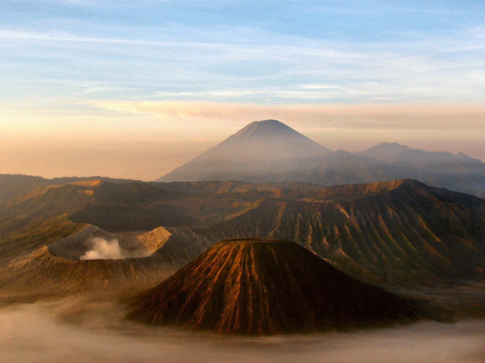

PESONA ALAM DUNIA
Website ini menampilkan beberapa contoh pesona alam
Website ini menampilkan beberapa contoh pesona alam
Ada banyak sekali pengalaman yang akan kamu dapatkan di Safari Gurun Dubai. Duduklah di belakang mobil 4WD dan pegangan erat-erat layaknya pengemudi yang berpengalaman. Ada dua tempat pemberhentian untuk foto dengan pemandangan sunset yang indah. Setelah itu kamu akan merasakan berada di tempat tradisional, kampung badui, dilanjutkan dengan makan malam dengan masakan khas Arab. Baca artikel detikTravel, "Menikmati Padang Pasir yang Seru di Dubai"
Alberta, yang terletak di Kanada bagian barat, mempunyai luas area sebesar 661,190 km² (260,000 mi²). Provinsi ini berbatasan dengan Amerika Serikat di perbatasan sebelah selatan, dipisahkan dengan garis lintang ke-49. Di sebelah timur, provinsi ini berbatasan dengan Saskatchewan. Ke sebelah baratnya, berbatasan dengan British Columbia yang perbatasannya dibagi berdasarkan puncak-puncak Pegunungan Rockies sepanjang Garis Kontinental, yang memanjang ke arah barat-laut.
Gunung Bromo atau dalam bahasa Tengger dieja "Brama", juga disebut Kaldera Tengger, adalah sebuah gunung berapi aktif di Jawa Timur, Indonesia. Gunung ini memiliki ketinggian 2.329 meter di atas permukaan laut dan berada dalam empat wilayah kabupaten, yakni Kabupaten Probolinggo, Kabupaten Pasuruan, Kabupaten Lumajang, dan Kabupaten Malang. Gunung Bromo terkenal sebagai objek wisata utama di Jawa Timur. Sebagai sebuah objek wisata, Bromo menjadi menarik karena statusnya sebagai gunung berapi yang masih aktif. Gunung Bromo termasuk dalam kawasan Taman Nasional Bromo Tengger Semeru.

Puncak Jaya Wijaya atau Piramida Carstensz ialah sebuah puncak tertinggi yang menjadi bagian dari Pegunungan Barisan Sudirman yang terdapat di Provinsi Papua, Indonesia. Puncak Jaya atau Piramida Carstensz mempunyai ketinggian 4.884 mdpl dan di sekitarnya terdapat gletser dengan nama yang sama yakni gletser Carstensz, satu-satunya gletser tropika di Indonesia, yang tersisa dan secara perlahan mulai menipis akibat pemanasan globa